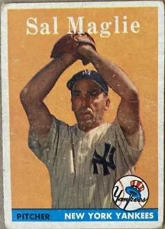

Sal Maglie "The Barber"
Career Highlights & Facts
(Facts are AI-generated and may require verification)
- Known for a menacing, unshaven appearance and a pitching style that frequently forced batters to retreat from the plate, earning a nickname based on his proximity to their chins.
- Holds the unique distinction of being the only player to wear the uniforms of all three professional clubs based in the same major metropolitan area during his era.
- Was the opposing pitcher on the mound during the only perfect game ever thrown in a World Series, despite delivering a strong performance himself.
Would you like to find out more about Sal Maglie?
Career Totals
| WAR | W | L | ERA | G | GS | SV | IP | SO | WHIP |
|---|---|---|---|---|---|---|---|---|---|
| 30.5 | 119 | 62 | 3.15 | 303 | 232 | 14 | 1723.0 | 862 | 1.250 |
Statistics via Baseball-Reference.com
The Original Clue